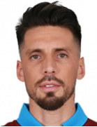

TRABZONSPOR
Karadenizin Fırtına Takımı !
TARİHİMİZ
Türkiye İdman Cemiyetleri ittifakının kurulması ve Türk Sporunun bu ilk örgütünün tüm Anadolu’ya yayılması, Trabzon’da da etkisini göstermişti. Bu etki sonucu yeni yeni kulüpler kurulmaya başlandı. İdmanocağı, İdmangücü, Necmiati’den sonra Trabzon Lisesi bünyesinde Lise adını taşıyan yeni bir kulübün kurulmasıyla kulüp sayısı 4 olmuştu. 1923 yılından sonra Trabzon’da İdmanocağı ve İdmangücü arasında büyük bir rekabet başlamıştı. Bu öyle bir rekabetti ki İstanbul’daki Galatasaray- Fenerbahçe rekabetine benziyordu. Hatta zaman zaman onu bastırdığı bile oluyordu. Trabzon sanki Ocaklılar, Güçlüler diye ikiye ayrılmıştı. Trabzon’da futbolun bu iki takım arasındaki rekabetten yüceldiği söylenebilir. Rekabet zamanla öylesine büyük boyutlara vardı ki Trabzon’un Türkiye liglerinde geç temsil edilmesine bile sebep oldu. Ne var ki iki kulüp arasındaki çekişme şehrin futbolundaki kaliteyi de her geçen gün arttıran faktör olduğu göz ardı edilemez.1923 yılında Trabzon’da ilk resmi lig maçları oynanmaya başlandı. İlk sezon İdmanocağı şampiyon olmuştu. Bunu 1923-24,1924-25 sezonlarında Lise takımının arka arkaya şampiyonlukları izledi. 1925 sezonunda yine İdmanocağı şampiyon olurken, 1929 yılına kadar da önce Lise, arkasından Muallim Mektebi daha sonra da Ticaret Lisesi takımları mutlu sona ulaştılar.İdmanocağı ile İdmangücü arasındaki büyük rekabet 1930’dan sonra had safhaya ulaştı. 1929-30’dan sonra 5 kez arka arkaya İdmanocağı’nın şampiyon olmasından sonra 1934-35 sezonundan itibaren İdmangücü takımı tam 7 yıl arka arkaya şampiyon olarak bu iki takım arasındaki rekabeti büsbütün alevlendirmişti.1940’lı yıllarda Trabzon futbolundaki güç lise takımlarına geçmişti. Tam 6 kez arka arkaya şampiyonluğu kazanması da bunu gösteriyordu. Bu aralar dikkat çeken bir hususta Trabzon’daki bütün futbol yıldızlarının Lise takımlarından yetişmiş olmalarıydı. Özellikle Trabzon Lisesi bir futbolcu kaynağı olmuştu. 1947-48 sezonundan itibaren şampiyonluk yine İdmanocağı ile İdmangücü arasında el değiştiriyordu. Bu arada Necmiati de iki sezon şampiyon olarak Trabzon futbolunda söz sahibi oldu. Bu arada Trabzon’da yeni yeni kulüpler de kuruluyordu. 1938’de kurulan Doğan Gençlik, 1941 yılında Akçaabat Lisesinde kurulan Akçaabat Gençlik (Bugünkü Sebatspor), 1950 yılında Sürmene ilçesinde kurulan Sürmene Gençlik, 1952 yılında ayni ilçede kurulan Zafer Gençlik, 1953 yılında kurulan Yolspor 1955 yılında kurulan Yalıspor bu takımların başında geliyordu.1930’lu yıllarda başlayan İdmanocağı, İdmangücü rekabeti 1940’lı, 1950’li, 1960’lı yıllarda olanca şiddetiyle devam ediyordu. Bu gitgide rekabetten öte boyutlara varmaktaydı. Ocaklı ve Güçlü olmak Trabzon’da adeta bir spor mezhebi haline gelmişti. En kötü sezonlarda bile rekabetlerinden hiç bir şey kaybetmiyorlardı.Trabzon öylesine ikiye ayrılmıştı ki Ocaklılar Sari Kırmızı diye İstanbul’daki Galatasaray’ı İdmangüçlülerse Yeşil Beyaz renklerine rağmen Fenerbahçe’yi destekliyorlardı. Rekabet bir de bu sekliyle alevlenmişti. Bu arada renkleri Sarı Lacivert olan Necmiati bile bu rekabetin dışında kalmıştı. Aslında bu büyük rekabetten en karlı Trabzon futbolu çıkıyordu. Öncelikle şehirde futbol tutkusu körüklenmişti. Bu büyük rekabetten doğan büyük iddia Trabzon’da büyük yıldızların çıkmasına neden olmuştur. Ancak, Trabzon insanının alın yazısı olan gurbetçilik 1930’lu yıllarda Trabzon’daki futbol yıldızlarının kaderine tesir etmişti. Pek çoğu yüksek öğrenim uğruna ana kucaklarını baba ocaklarını terk etmek zorunda kaldılar. Gittikleri İstanbul ve Ankara’da sürdürdükleri futbol yaşamlarında gerçekten büyük yıldız oldular. Bir Hasan Polat ve kardeşi Ali Polat Ankara Gençlerbirliği’nde , bir Selim Satıroğlu, Ahmet Karlıklı Galatasaray’da bir Taka Naci, Zekeriya Bali Fenerbahçe’de, Nazmi Bilge Beşiktaş’ta yıldız futbolcu oluverdiler.1962-63 sezonunda tüm yurtta bir İl takımı kurulması öngörülmüştü. Zamanın Futbol Federasyonu Başkanı Orhan Şeref Apak, Türkiye liglerini güçlendirmek ve tüm yurda yaymak amacıyla bir seferberlik başlatmıştı. Her ilde bir futbol takımı kurup Türkiye liglerinde yer alması seferberliği büyük bir hızla devam ediyordu. Trabzon elbette ki bunun dışında kalamazdı. Yalnız bir İl Kulübü kurulmasının en zor olan illerin başında kuşkusuz Trabzon gelmekteydi. İdmanocağı, İdmangücü rekabeti Trabzon futboluna öylesine hakimdi ki bu iki kulübün bir çatı altında toplanmasına imkan yoktu. Nitekim böyle bir girişimde bulunmak isteyen bir avuç idealistin daha ilk çalışmalarında bunun imkansız olduğu gerçeği bir kez daha anlaşılmıştı.Tüm Trabzonlular, Trabzonspor adıyla bir kulübün kurulmasını yürekten arzuluyorlardı. Yetkililerinde araya girmesi, sonucu pek değiştirmiyordu Ocaklılar da, Güçlüler de yeni kurulacak kulüpte kendi isimlerinin, hatta renklerinin hakim olmasını istiyorlardı ve bu konuda en ufak bir fedakarlıkta bulunmuyorlardı. Her gün, her akşam toplantı üstüne toplantı yapılıyordu. Bazen tam bir anlaşma zemini ortaya çıkıyor ama yine en ufak bir ayrıntı her şeyi berbat ediyordu. Havaya silahlar atılıyor, karakollara, hatta mahkemelere kadar uzanan olaylara rastlanıyordu. Öte yandan Futbol Federasyonunun il kulüpleri için tanıdığı sürenin de sonu yaklaşıyordu.21 Haziran 1966 tarihinde İdmanocağı, Martıspor ve Yıldızspor’un da katılımı ile sarı Kırmızı renkler altında Türkiye 2. Ligine alındı. Ancak, resmi bir yazının süresi içinde ilgili yere tebliğ edilmediği için İdmanocağı’nın İkinci ligde oynaması durduruldu. Bu tarihten yaklaşık bir ay sonra 20 Temmuz 1966’da bu kez İdmangücü, Karadenizgücü, Martıspor ve Yolspor’un katılmasıyla Trabzonspor Kırmızı-Beyaz renklerle kuruldu. Ne var ki İdmanocağı buna karşı çıktı. Danıştay’da açtığı dava ile yürütmeyi durdurma kararı alınınca ortalık yine karıştı. Trabzon’daki gergin durum üzerine araya Zamanın Beden Terbiyesi Genel Müdürü Ulvi Yenal girdi. Ulvi Yenal, İdmanocağı ve İdmangücü’nün birleşmemeleri halinde iki kulübünde Türkiye 2. Ligine alınmayacağını bildirdi. Bu durum Trabzon’da ve her iki kulüp çevresinde “Sok” etkisi yaratmıştı. Birleşmeleri büyük sorun olan bu iki kulübün, birleşmemeleri halinde Trabzon Türkiye liglerinde temsil edilemeyecekti. Trabzon’daki geceli gündüzlü yapılan ve büyük tartışmalara neden olan toplantılar sonunda 2 Ağustos 1967 günü İdmanocağı ile İdmangücü birleşmesi gerçekleşti ve Trabzonspor; İdmanocağı, İdmangücü, Karadenizgücü ve Martıspor’un birleşmesi ile ortaya çıktı.Artık bütün resmi işlemler tamamlandıktan sonra sıra gelmişti Trabzonspor’un renklerine. Renk bulmak öyle kolay olmadı. Trabzon’da uzun yıllar süren İdmanocağı-İdmangücü rekabetinde Sari-Kırmızı ve Yeşil-Beyaz renkler hakimdi. Trabzonspor’un renkleri bu renklerin dışında olmalıydı. Trabzon’u ve Karadeniz’i simgeleyen renkler aranıyordu. Bu konuda yarışma açılması da gündeme geldi ancak sonra vazgeçildi. Renk için geceli gündüzlü toplantılar düzenleniyordu. Dört toplantıdan sonuç alınamamıştı. Beşinci toplantıda her şey bitecekti. Artık taraftarın da sabrı kalmamıştı. Dönemin Federasyon Başkanı Orhan Şeref Apak sorunu çözmeye çalışırken Federasyon Genel Müdürü Ulvi Yenal’ın makamında toplanan taraflar iki kulübün renklerinden farklı bir rengin seçilmesi üzerinde yoğun tartışmalar gerçekleştirirler. Yaşanan gelişme üzerine sabrı taşan Yenal iki kulübün temsilcilerinden birer renk seçmesini talep eder. Böylelikle İdmanocağı grubu “koyu bordo”, İdmangücü ise “açık mavi” üzerinde görüş bildirir. Sonuçta Trabzonspor’u kuran iki köklü kulüp renk konusunu “BORDO-MAVİ” diye karara bağlarlar.Böylece bir haftadır şehirde süren renk kavgası sona erer ve Trabzonspor Bordo-Mavi renklerine kavuşur.
Kurucular ve Bilgiler
Kuruluş : 2 Ağustos 1967
Renkler : Koyu Bordo – Açık Mavi
Kurucular: M. Rıfat Dedeoğlu, A.Osman Ulusoy, Sebahattin Kundupoğlu, Refik Karaağaçlı, Hasan Ataç, Nihat Karanis, Bahri Yıldız, Mahmut Danış, E. Sabri Uğurbaş, Zeyyad Nemli, İrhan Kazancıoğlu, Nizamettin Algan, Ruhan Öngür, A. Salih Erdem, Avni Yurdagül, Nihat Özgür, Osman Tomruk, Ahmet Yıldırım, Süha Akçay, Sabit Sabır
İlk Başkan :A.Osman ULUSOY
İlk Kaptan :Şevki GENÇOSMANOĞLU
İlk Gol Kralı :Necmi PEREKLİ
En Çok Forma Giyen :Hami MANDIRALI (558 kez)
En Uzun Süre Kaptanlık Yapan :Şenol GÜNEŞ (10 yıl)
Başkan: Ahmet AĞAOĞLU
TRABZONSPOR
1975-76 Sezonu: Türkiye Lig şampiyonluğu.
1976-77 Sezonu: Türkiye Lig şampiyonluğu.
1978-79 Sezonu: Türkiye Lig şampiyonluğu
1979-80 Sezonu: Türkiye Lig şampiyonluğu
1980-81 Sezonu: Türkiye Lig şampiyonluğu
1983-84 Sezonu: Türkiye Lig şampiyonluğu
2010-11 Sezonu: Türkiye Lig 2.liği
1976-77 Sezonu: Türkiye Kupası şampiyonluğu
1977-78 Sezonu: Türkiye Kupası şampiyonluğu
1983-84 Sezonu: Türkiye Kupası şampiyonluğu
1991-92 Sezonu: Türkiye Kupası şampiyonluğu
1994-95 Sezonu: Türkiye Kupası şampiyonluğu
2002-03 Sezonu: Türkiye Kupası şampiyonluğu
2003-04 Sezonu: Türkiye Kupası şampiyonluğu
2009-10 Sezonu: Türkiye Süper Kupa şampiyonluğu
1975-76: Cumhurbaşkanlığı Kupası şampiyonluğu
1977-78 Sezonu:Cumhurbaşkanlığı Kupası şampiyonluğu
1978-79 Sezonu:Cumhurbaşkanlığı Kupası şampiyonluğu
| # | Oyuncu | Doğum Tarihi | Uyruk |
|---|---|---|---|
| 23 |
UĞURCAN ÇAKIRKaleci |
5 Nis 1996 (24) | Türk |
| 53 |
filip NovakSol Bek |
26 Haz 1990 (29) | Çek Cumhuriyeti |
| 33 |
Gastón CampiStoper |
3 May 1989 (30) | Çek |
| 12 |
Manuel da CostaStoper |
1 Oca 1997 (22) | Fas |
| 15 |
João PereiraSağ Bek |
17 Oca 1988 (31) | Portekiz |
| 35 |
Badou NdiayeMerkez Orta Saha |
17 Kas 1992 (26) | Nijerya |
| 40 |
Abdulkadir ParmakMerkez Orta Saha |
19 Nisan 1997 (22) | Türkiye |
| 18 |
Anthony NwakaemeSol Kanat |
23 Ara 1995 (23) | Nijerya |
| 10 |

José SosaOn Numara |
23 Şub 1989 (30) | Brezilya |
| 50 |
Abdülkadir ÖmürSağ Kanat |
6 Mar 1995 (24) | Nijerya |
| 94 |
Alexander SörlothSantrafor |
24 Nis 1994 (25) | Norveç |
Şenol Güneş Stadyumu
Şenol Güneş Spor Kompleksi Medical Park Stadyumu[ ya da kısaca Medical Park Stadyumu
Trabzon'un Akyazı beldesinde yer alan, yapımına 24 Kasım 2013'te başlanılan ve 18 Aralık 2016'da açılan futbol stadyumudur.
Süper Lig kulüplerinden Trabzonspor'un maçlarına ev sahipliği yapmaktadır.
Stadın kapasitesi 40.782 kişilik olup, tahmini olarak 350 milyon TL'ye mal oldu.
Stat denize dolgu yapılan bir alanda inşa edildi. Stadyumdaki ilk maç 29 Ocak 2017'de
Trabzonspor ile Gaziantepspor arasında oynandı ve bu maçı Trabzonspor 4-0 kazandı.
Bu maçtaki ilk golü atan Fabián Castillo, stattaki ilk golü atan futbolcu oldu.
Dolgu İnşaatı
Toplu Konut İdaresi Başkanlığı Akyazı'da yapılacak stat için gerekli olan dolgu ve tahkimat işi ihalesini 22 Eylül 2010'da Ankara'da yaptı.[9] 12 firmanın teklif verdiği ihaleyi 36 milyon 950 bin TL ile en düşük teklifi veren Öztaş & Sistem İnşaat Ortaklığı kazandı.[9][10] Stadın dolgu işlemi 2011 yılının ocak ayında başlamasına rağmen üç ay sonra TMMOB Trabzon şubesinin Danıştay 6. Dairesi'ne yaptığı başvuru sonucunda proje hakkında yürütmeyi durdurma kararı verildi ve çalışmalar durdu. Çevre ve Şehircilik Bakanlığı'nın karara itirazının ardından Danıştay 6. Dairesi 6 Ekim 2011'de yürütmeyi durdurma kararını kaldırdı ve Akyazı'da dolgu çalışmaları yeniden başladı. Stadın dolgusu gecikmeler nedeniyle 2013 yılının başlarında tamamlanabildi.